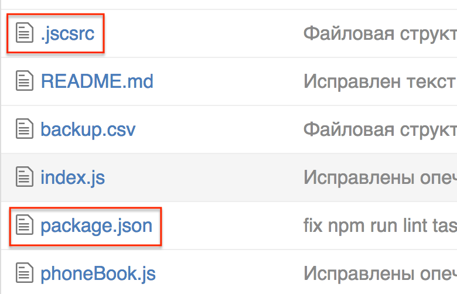
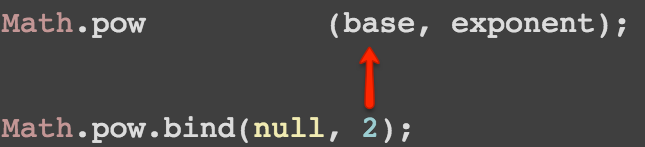

Функции
Объявление. Способы вызова.
Области видимости
Жигалов Сергей
Кодстайл
https://github.com/urfu-2015/guides
Требования к оформлению JavaScript

Установить
$ npm install
# <какой-то вывод...>
npm install
// packaje.json
{
dependencies: {
jscs: "^2.2.1"
}
}
Запустить
Способ №1
$ npm run lint
# <список ошибок>
npm run lint
// packaje.json
{
scripts: {
lint: "jscs ."
}
}
Запустить
Способ №2
Правила
.jscsrc
Пример
http://jscs.info/
disallowImplicitTypeConversion
// Valid
x = Boolean(y);
// Invalid
x = !!y;
disallowKeywordsOnNewLine
// Valid
} else {
// Invalid
}
else {
disallowMultipleSpaces
// Valid
var x = "hello";
function y() {}
// Invalid
var x = "hello";
function y() {}
disallowMultipleVarDecl
// Valid
var x = 1;
var y = 2;
// Invalid
var x = 1,
y = 2;
disallowNewlineBeforeBlockStatements
// Valid
if (cond) {
// Invalid
if (cond)
{
disallowSpaceAfterPrefixUnaryOperators
// Valid
x = !y;
// Invalid
x = ! y;
requireBlocksOnNewline
// Valid
if (true) {
doSomething();
}
// Invalid
if (true) {doSomething();}
requireCurlyBraces
// Valid
if (x) {
x++;
}
// Invalid
if (x) x++;
validateQuoteMarks
// Valid
var x = 'x';
// Invalid
var x = "x";
...
Итого
Итого
npm install
npm run lint
Функции
Функции
- Не повторять код (DRY)
- Объединить группу действий
- Удобнее читать и изменять код
- Создать область видимости
- Рекурсивный вызов
Объявление функции
function add(x, y) {
return x + y;
}
Вызов функции
function add(x, y) {
return x + y;
}
add(2, 3); // 5
Без return
function lazy() {
}
lazy(); // undefined
Аргументы
function asIs(x){
return x;
}
asIs(); // undefined
Аргументы
function myMin(a, b) {
return a < b ? a : b;
}
myMin(2, 7); // 2
myMin(13, 7); // 7
myMin(13); // undefined
Аргументы
function myMin(a, b) {
if (b === undefined) {
return a;
}
return a < b ? a : b;
}
myMin(13); // 13
Значение по умолчанию
function myMin(a, b) {
b = b || Infinity;
return a < b ? a : b;
}
myMin(2, 7); // 2
myMin(13, 7); // 7
myMin(-13); // -13
Значение по умолчанию
function getSalary(rate, days) {
days = days || 22;
return rate * days;
}
getSalary(3, 10); // 30
getSalary(1); // 22
getSalary(2, 0); // 44 ???
Именованные аргументы
BMI({ m: 60, h: 1.7 }) // 20.7
function BMI(params) {
var h = params.h;
return params.m / (h * h);
}
Именованные аргументы
Достоинства
- Неважен порядок аргументов
- Неограниченное число аргументов
- Легко рефакторить код
Именованные аргументы
Недостатки
- Неявный интерфейс
- Неудобно работать с аргументами
Лишние аргументы
function myMin(a, b) {
return a < b ? a : b;
}
myMin(7, 5, 1); // 5
arguments
arguments
function myMin(a, b) {
var min = a < b ? a : b;
var c = arguments[2];
return c < min ? c : min;
}
myMin(2, 3, 4); // 2
myMin(20, 3, 4); // 3
myMin(20, 30, 4); // 4
array-like
function addMany() {
var sum = 0;
var length = arguments.length;
for (var i = 0; i < length; i += 1) {
sum += arguments[i];
}
return sum;
}
addMany(2, 3, 4); // 9
Приведение к массиву
var args = [].slice.call(arguments);
Методы функции
apply
bind
apply
Math.min(3, 5, 2, 6); // 2
var numbers = [3, 5, 2, 6];
Math.min(numbers); // NaN
apply
var numbers = [3, 5, 2, 6];
Math.min.apply(null, numbers); // 2
Частичное применение
Math.pow(base, exponent);
Math.pow(2, 4); // 16
Math.pow(2, 10); // 1024
Частичное применение
Частичное применение
var binPow = Math.pow.bind(null, 2);
binPow(4); // 16
binPow(10); // 1024
Функции первого класса
Функция -
- аргумент другой функции
- результат работы функции
- присвоена в переменную
Функции первого класса
var numbers = [3, 5, 9];
numbers.map(function (item) {
return item * 2;
}); // [6, 10, 18]
Способы объявления
function declaration
function expression
function declaration
function add(x, y) {
return x + y;
}
function declaration
add(2, 3); // 5
function add(x, y) {
return x + y;
}
Как это видит интерпретатор
function add(x, y) {
return x + y;
}
add(2, 3); // 5
function expression
var add = function (x, y) {
return x + y;
};
function expression
add(2, 3);
// TypeError:
// add is not a function
var add = function (x, y) {
return x + y;
};
Named function expression
var add = function hidden() {
return typeof hidden;
}
typeof add; // 'function'
typeof hidden;
// ReferenceError:
// hidden is not defined
add(); // 'function'
Факториал
var factorial = function inner(n) {
return (n === 1) ?
1 : n * inner(n - 1);
}
factorial(3); // 6
Конструктор Function
var add = new Function('x', 'y', 'return x + y');
add(2, 3);
Область видимости
Область видимости
function greet() {
var text = 'Привет';
console.log(text); // 'Привет'
}
console.log(text);
// ReferenceError:
// text is not defined
Вложенные функции
function greet() {
var text = 'Привет';
function nested() {
console.log(text); // 'Привет'
}
}
Затенение
function greet() {
var text = 'Привет';
function nested() {
var text = 'Добрый день';
console.log(text); // 'Добрый день'
}
console.log(text); // 'Привет'
}
Блоки
function greet() {
if (true) {
var text = 'Привет';
}
console.log(text); // 'Привет'
}
IIFE
immediately-invoked function expression
IIFE
function greet() {
(function () {
var text = 'Привет';
}());
console.log(text);
// ReferenceError:
// text is not defined
}
IIFE
(function () {
}());
(function () {
})();
!function () {
}();
void function () {
}();
Новые возможности языка
Блочная область видимости
function greet() {
if (true) {
let text = 'Привет';
}
console.log(text);
// ReferenceError:
// text is not defined
}
Домашнее задание
Регламент сдачи
Если будет 10 задач:
- ≥ 3 - допуск на зачет
- ≥ 5 - минус теоретический вопрос
- ≥ 8 - автомат